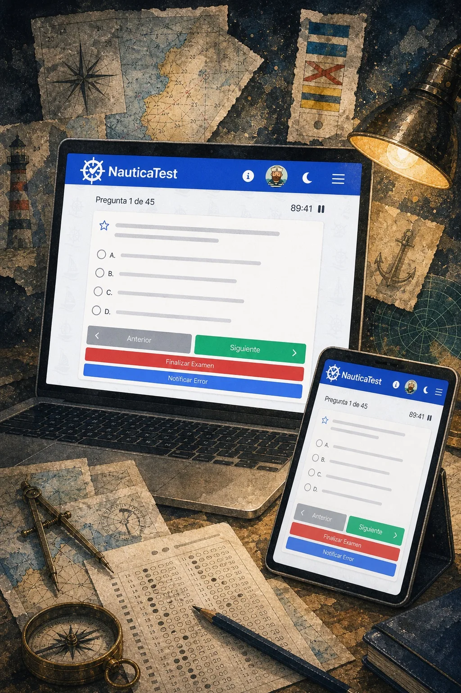

Independent software products Productos digitales independientes
Lagartija Labs
Focused web and mobile software with a clear job, a sharp interaction model, and a privacy-conscious foundation. Software web y móvil con un propósito claro, una interacción precisa y una base respetuosa con la privacidad.
Studio Estudio
Small products that stay useful. Productos pequeños que siguen siendo útiles.
Lagartija Labs makes compact digital tools that respect attention: fast flows, obvious decisions, and no unnecessary machinery around the core task. Lagartija Labs crea herramientas digitales compactas que respetan la atención: flujos rápidos, decisiones claras y nada innecesario alrededor de la tarea principal.
Web platform Plataforma web
NauticaTest
Prepare for Spanish nautical licenses with official exam simulations, regional question banks, progress tracking, and study flows made for PNB, PER, Patrón de Yate, and Capitán de Yate. Prepara titulaciones náuticas españolas con simulacros oficiales, bancos de preguntas por comunidad, seguimiento de progreso y modos de estudio para PNB, PER, Patrón de Yate y Capitán de Yate.


Current release Lanzamiento actual
Tindrop
Clean your photo library with quick keep-or-drop decisions, then review the queue before anything is removed. Limpia tu biblioteca de fotos con decisiones rápidas de conservar o descartar, y revisa la cola antes de eliminar nada.


Contact Contacto
Support and product questions. Soporte y preguntas sobre producto.
For support, privacy requests, and product questions, use the developer contact below. Para soporte de producto, solicitudes de privacidad y preguntas sobre producto, usa el contacto del desarrollador.
lagartijalabs@gmail.com